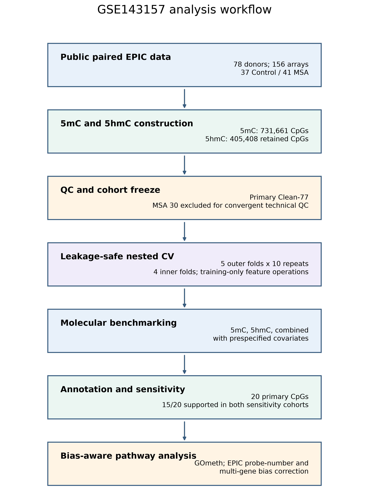
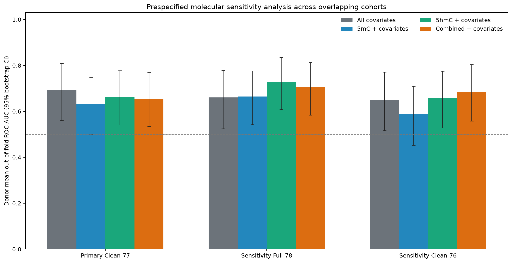
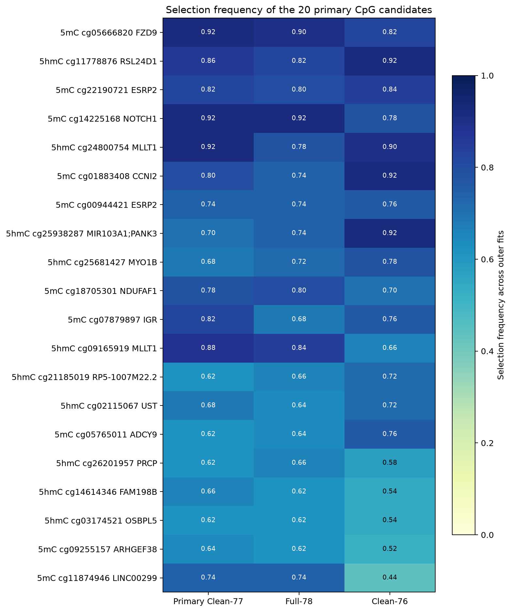

| cohort | role | donors_n | control_n | msa_n | female_n | male_n | age_mean_years | age_range_years | excluded_donors |
|---|---|---|---|---|---|---|---|---|---|
| Primary Clean-77 | Primary analysis | 77 | 37 | 40 | 41 | 36 | 69.350649 | 51-91 | MSA 30 |
| Sensitivity Full-78 | Outlier-inclusion sensitivity | 78 | 37 | 41 | 42 | 36 | 69.346154 | 51-91 | None |
| Sensitivity Clean-76 | Strict outlier stress-test | 76 | 36 | 40 | 41 | 35 | 69.407895 | 51-91 | MSA 30; Control 11 |
| cohort | model | roc_auc_95ci | pr_auc | balanced_accuracy | delta_roc_auc_vs_all_covariates |
|---|---|---|---|---|---|
| Primary Clean-77 | 5hmC + covariates | 0.663 (0.541-0.778) | 0.677 | 0.571 | -0.030 |
| Primary Clean-77 | 5mC + covariates | 0.632 (0.501-0.747) | 0.670 | 0.632 | -0.061 |
| Primary Clean-77 | All covariates | 0.693 (0.560-0.809) | 0.617 | 0.622 | 0.000 |
| Primary Clean-77 | Combined + covariates | 0.653 (0.534-0.770) | 0.694 | 0.598 | -0.041 |
| Sensitivity Full-78 | 5hmC + covariates | 0.730 (0.608-0.835) | 0.747 | 0.640 | 0.069 |
| Sensitivity Full-78 | 5mC + covariates | 0.664 (0.543-0.777) | 0.721 | 0.597 | 0.004 |
| Sensitivity Full-78 | All covariates | 0.661 (0.524-0.778) | 0.607 | 0.625 | 0.000 |
| Sensitivity Full-78 | Combined + covariates | 0.705 (0.584-0.813) | 0.736 | 0.602 | 0.044 |
| Sensitivity Clean-76 | 5hmC + covariates | 0.659 (0.528-0.775) | 0.660 | 0.606 | 0.010 |
| Sensitivity Clean-76 | 5mC + covariates | 0.588 (0.453-0.710) | 0.620 | 0.553 | -0.060 |
| Sensitivity Clean-76 | All covariates | 0.649 (0.516-0.771) | 0.587 | 0.629 | 0.000 |
| Sensitivity Clean-76 | Combined + covariates | 0.685 (0.558-0.804) | 0.661 | 0.647 | 0.036 |
| source_modality | cpg_id | gene_symbols | stability_tier | primary_model_selection_frequency | minimum_sensitivity_selection_frequency | sensitivity_supported_both | manifest_qc_status | paper_priority |
|---|---|---|---|---|---|---|---|---|
| 5mC | cg05666820 | FZD9 | B_moderate_stability | 0.920 | 0.820 | True | pass_manifest_audit | Core robust, manifest-audited (Tier B) |
| 5hmC | cg11778876 | RSL24D1 | A_high_stability | 0.860 | 0.820 | True | pass_manifest_audit | Core robust, manifest-audited (Tier A) |
| 5mC | cg22190721 | ESRP2 | A_high_stability | 0.820 | 0.800 | True | pass_manifest_audit | Core robust, manifest-audited (Tier A) |
| 5mC | cg14225168 | NOTCH1 | A_high_stability | 0.920 | 0.780 | True | pass_manifest_audit | Core robust, manifest-audited (Tier A) |
| 5hmC | cg24800754 | MLLT1 | A_high_stability | 0.920 | 0.780 | True | pass_manifest_audit | Core robust, manifest-audited (Tier A) |
| 5mC | cg01883408 | CCNI2 | A_high_stability | 0.800 | 0.740 | True | review_common_manifest_snp | Robust but manifest-SNP review required (Tier A) |
| 5mC | cg00944421 | ESRP2 | B_moderate_stability | 0.740 | 0.740 | True | pass_manifest_audit | Core robust, manifest-audited (Tier B) |
| 5hmC | cg25938287 | MIR103A1;PANK3 | B_moderate_stability | 0.700 | 0.740 | True | pass_manifest_audit | Core robust, manifest-audited (Tier B) |
| 5hmC | cg25681427 | MYO1B | B_moderate_stability | 0.680 | 0.720 | True | pass_manifest_audit | Core robust, manifest-audited (Tier B) |
| 5mC | cg18705301 | NDUFAF1 | B_moderate_stability | 0.780 | 0.700 | True | review_common_manifest_snp | Robust but manifest-SNP review required (Tier B) |
| 5mC | cg07879897 | A_high_stability | 0.820 | 0.680 | True | review_common_manifest_snp | Robust but manifest-SNP review required (Tier A) | |
| 5hmC | cg09165919 | MLLT1 | A_high_stability | 0.880 | 0.660 | True | pass_manifest_audit | Core robust, manifest-audited (Tier A) |
| 5hmC | cg21185019 | RP5-1007M22.2 | B_moderate_stability | 0.620 | 0.660 | True | review_common_manifest_snp | Robust but manifest-SNP review required (Tier B) |
| 5hmC | cg02115067 | UST | B_moderate_stability | 0.680 | 0.640 | True | pass_manifest_audit | Core robust, manifest-audited (Tier B) |
| 5mC | cg05765011 | ADCY9 | B_moderate_stability | 0.620 | 0.640 | True | pass_manifest_audit | Core robust, manifest-audited (Tier B) |
| 5hmC | cg26201957 | PRCP | B_moderate_stability | 0.620 | 0.580 | False | pass_manifest_audit | Secondary, cohort-sensitive (Tier B) |
| 5hmC | cg14614346 | FAM198B | B_moderate_stability | 0.660 | 0.540 | False | review_common_manifest_snp | Secondary, cohort-sensitive and manifest review required (Tier B) |
| 5hmC | cg03174521 | OSBPL5 | B_moderate_stability | 0.620 | 0.540 | False | review_common_manifest_snp | Secondary, cohort-sensitive and manifest review required (Tier B) |
| 5mC | cg09255157 | ARHGEF38 | B_moderate_stability | 0.640 | 0.520 | False | pass_manifest_audit | Secondary, cohort-sensitive (Tier B) |
| 5mC | cg11874946 | LINC00299 | B_moderate_stability | 0.740 | 0.440 | False | pass_manifest_audit | Secondary, cohort-sensitive (Tier B) |
GOmeth FDR-significant terms: 0. Selected CpGs were ML-stable candidates, not EWAS-significant loci.


